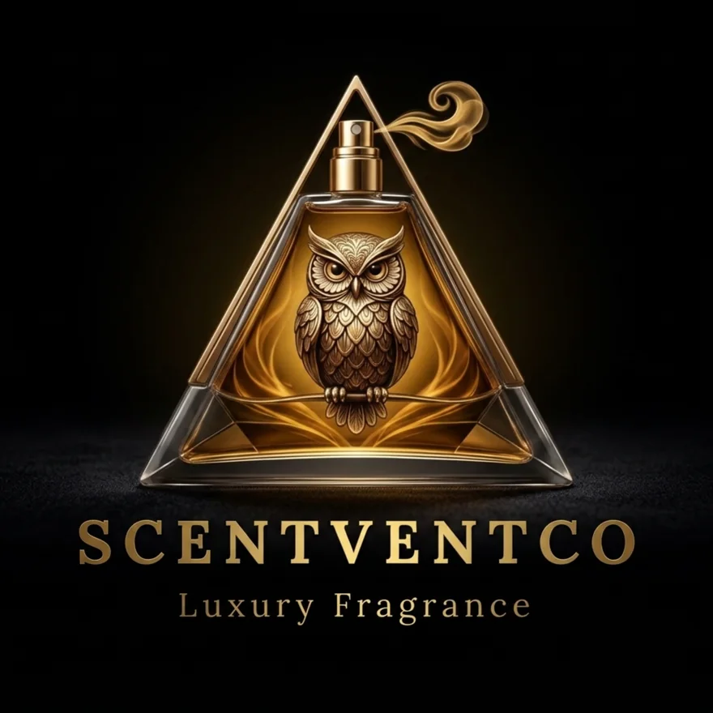

For moments when you want your presence to feel composed, premium and unforgettable.
Founder Story · Jay Vyas
A difficult season became a fragrance house with heart.
Scentvent Co. was not created only to sell perfume. It was created to turn emotion, memory and confidence into something people can wear, gift and bring into their everyday spaces.
FounderJay VyasA fragrance lover who turned struggle, family belief and global research into a luxury brand made for India.
The emotion behind the brand
Before the brand, there was a man trying to find his direction.
There are businesses that begin with a market gap, and there are businesses that begin with a life moment. Scentvent Co. belongs to the second kind. Before the name, before the bottles and before the packaging, Jay Vyas was passing through a phase filled with pressure, uncertainty and personal struggle. It was the kind of time when every day demands strength, but the mind still looks for one small thing that can make it feel lighter.
For Jay, that small thing was fragrance. A good perfume was never just a luxury product for him. It was a mood shift. It was the feeling of stepping out with confidence even when life was heavy. It was the quiet comfort of smelling something premium, refined and powerful when the world outside felt complicated. Fragrance became a reminder that a person can still feel fresh, composed and hopeful.
His wife and life partner saw this connection more clearly than anyone else. She noticed how deeply Jay loved luxury perfumes, how carefully he observed brands, bottles, notes and finishes, and how naturally he spoke about fragrance. Her suggestion was simple, but powerful: “Why not build something of your own from this love?” That one belief became the emotional spark of Scentvent Co.
From that moment, the idea stopped being only about perfume. It became about making luxury feel reachable. It became about giving Indian customers a product that looked premium, smelled memorable and carried a story they could connect with emotionally. Scentvent Co. was born from struggle, but it was shaped by love, partnership and the courage to begin again.
Why people buy fragrance
People do not buy only a bottle. They buy a feeling.
A perfume becomes part of your identity. It sits close to your skin, enters a room before your words and stays in memory after you leave. That is why Scentvent Co. treats fragrance as an emotional product, not just a cosmetic product.
Every collection is built to answer a simple question: “How do you want to feel today?” Bold and powerful. Calm and spiritual. Warm and intimate. Fresh and positive. The product is the bottle, but the real purchase is the confidence, the atmosphere and the memory it creates.
For homes, offices, prayer rooms and corners that need a cleaner, calmer, more uplifting atmosphere.
For customers who want to give something personal, luxurious and useful without making it feel ordinary.
The first product idea
From positivity at home to premium fragrance on the skin.
The earliest thinking under Scentvent Co. came from everyday spaces. Jay noticed that many people were living with stress, tiredness and low energy. Homes, offices and personal rooms often needed a fresh start. Temples and peaceful spaces had their own kind of positive atmosphere — clean, sacred and calming. That feeling inspired the idea of room sprays and camphor-based fragrances.
The purpose was never to claim a cure. The purpose was to create freshness, motivation and a healthier-feeling environment through fragrance. A room can change the way people behave inside it. A beautiful scent can make a prayer corner feel more peaceful, a workspace feel more active and a home feel more welcoming.
That was the beginning. From space fragrance, the vision naturally expanded into personal perfumes. If a scent can change the mood of a room, it can also change the way a person carries themselves.

Room Rituals
Freshness for every space
Freshness for every space
 FROM
FROMINDIATo global curiosity
The response that gave courage
Samples travelled. Confidence came back.
When early samples moved beyond India, something meaningful happened. People from markets like the USA, UK, UAE and other countries showed interest and placed orders. For Jay, this response was more than business validation. It was proof that a fragrance dream from India could be accepted internationally when the product carried quality, story and presentation.
But he did not want to build a brand only for export attention. His deeper goal was to bring that same premium feeling back to Indian customers at a price that felt more accessible. He wanted people here to experience luxury without feeling that luxury was too far away, too expensive or reserved only for a few.
That is why Scentvent Co. carries two emotions together: international aspiration and Indian accessibility.
The China chapter
Jay travelled to understand what makes fragrance feel truly premium.
Jay Vyas did not want to build Scentvent Co. from guesswork. To understand the real side of fragrance manufacturing, he travelled to China and studied how global perfume products are planned, produced, filled, finished and presented. He looked at how premium fragrance oils are sourced, how bottles are selected, how packaging creates trust and how manufacturing discipline affects the final customer experience.
That journey gave him clarity. A luxury fragrance is not created only by a nice smell. It is created by the blend, the bottle, the cap, the spray feel, the label placement, the box, the unboxing moment and the emotional promise behind it. Every small decision changes how premium the product feels in a customer’s hand.
He brought that learning back into Scentvent Co. with one focus: the brand must look luxurious, feel carefully made and remain approachable for the Indian market.
Understanding filling, finishing, packaging and production discipline.
Reviewing fragrance character, depth, projection and lasting impression.
Studying how luxury perfume brands create trust before the first spray.
Bringing a premium feeling to customers without making it feel unreachable.
The founder’s journey
02 / 06The struggle
A difficult phase taught Jay the value of small moments that restore confidence, calm and courage.
The spark
His wife and life partner saw his love for luxury fragrance and encouraged him to build something meaningful from it.
The room ritual
The first idea focused on freshness and positivity for homes, offices, prayer corners and everyday spaces.
The global response
Early samples received interest from international markets, giving the brand stronger belief and direction.
The research
Jay explored manufacturing, perfume oils and premium presentation to understand how luxury is truly made.
The promise
Every product is checked with care so the customer receives not just fragrance, but a finished experience.
Bottle-by-bottle commitment
Personally checked.
Emotionally made.
For Scentvent Co., quality is not only a department. It is a founder-level responsibility. Jay Vyas personally pays attention to fragrance character, bottle feel, spray performance, label finish, packaging impression and final presentation. The goal is simple: when a customer opens Scentvent Co., it should feel like a product made with intention.
Each bottle should carry the reason the brand started — the belief that a good scent can lift a mood, complete a personality and make an ordinary day feel more special.
Choose your Scentvent Co. ↗Every scent is reviewed for its first impression, emotional direction and lasting personality.
Cap, bottle, label and overall presentation are checked so the product feels gift-worthy.
Trials and checks help refine the fragrance experience before it reaches the customer.
The brand aims to bring premium fragrance closer to Indian customers without losing elegance.
A note for the customer
When you buy Scentvent Co., you are not buying a random perfume.
You are choosing a brand built from a real journey — a difficult phase, a life partner’s belief, a founder’s personal obsession with fragrance and a promise to make luxury feel closer. You are choosing a scent that was imagined for people who want to feel fresh again, confident again and connected to their spaces again.
Wear it before a meeting. Spray it before guests arrive. Keep it in your room, your car, your travel bag or your daily routine. Let it become your small reminder that you deserve to feel premium even on ordinary days.
Choose by emotion
Find the scent that feels like your next chapter.
Go bold with V-King, soft with Vanilla, warm with Royal, fresh with Room Rituals, or explore everything through the Privé Discovery Box.
Explore products ↗